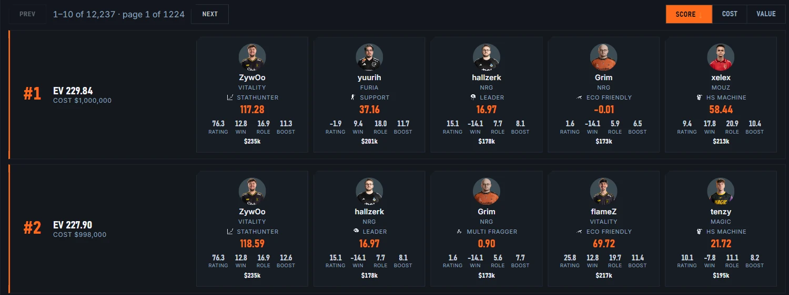
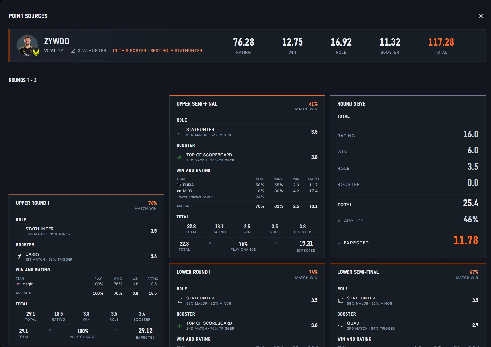
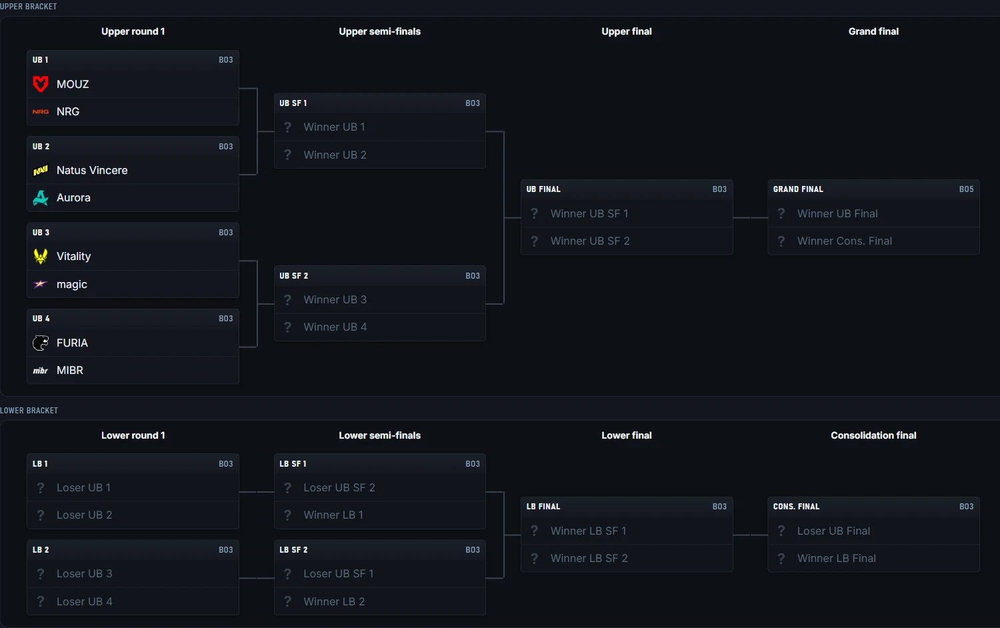
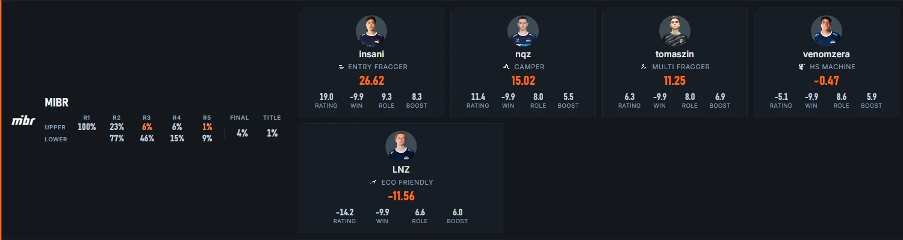

A free Windows app for Counter-Strike fantasy leagues. It enumerates every way the current event can play out, works out what each player is worth across all of those outcomes, and finds the best five-player rosters with roles and boosters already assigned.
Download for Windows free · x64 installerUpdates install themselves. Windows may show a SmartScreen notice on first run: choose More info, then Run anyway. All versions



